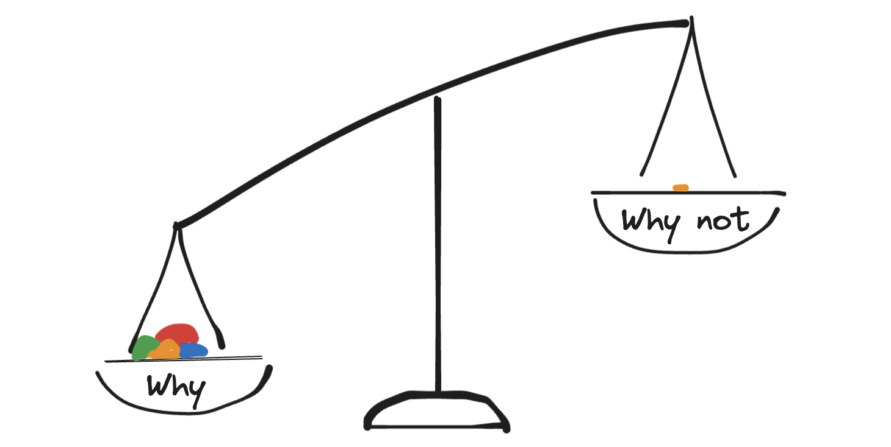
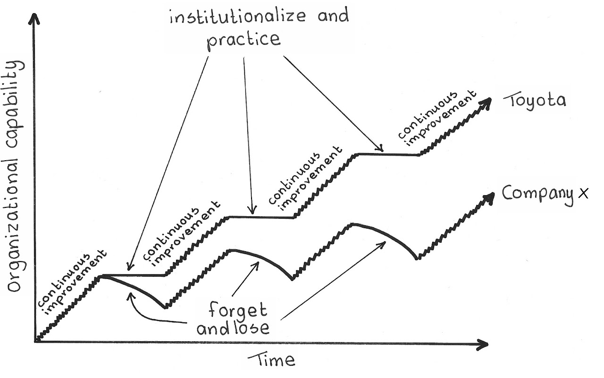
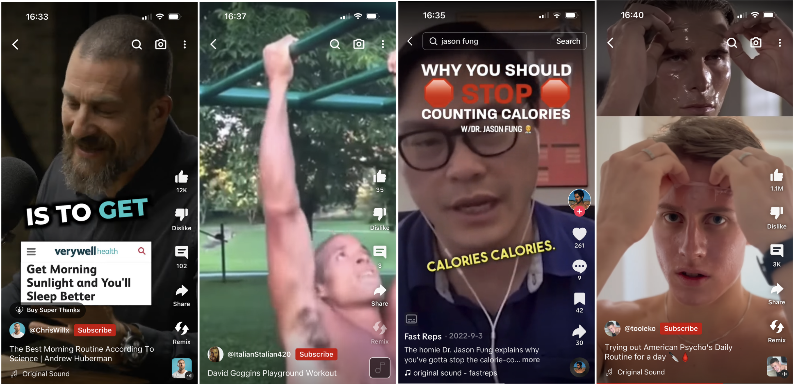

Habitualization
I promise that reading this will give you the power to build habits that last for the rest of your life.
We need good habits not to emulate other successful people, but to establish a controlled environment for our thoughts to flourish. My focused attention allows me to make high-quality, confident decisions. When I’m not focused, I’m preparing for the next time that I will be in focused thought. All is subservient to that focus.
Your body is a sanctuary, and your mind lives in a room. Habits are the furniture that make up that room. When your mind enters, the room should seat your thoughts in a commanding position to steer the vessel. Without the right habits, the captain would be distracted by minutia, anxious at the helm.
Self Nurture is a deliberate practice that requires repeated trials over several days with similar internal conditions. Habits allow you to achieve the same great mood every day to run personal experiments. To build a habit isn’t an isolated decision in one moment in time; it’s small effort distributed across time. I sometimes wish that I can brush my teeth for several hours and not need to do it ever again for the rest of my life, but that’s not now it works. Let’s figure out how you can make a habit, add it to your life, and keep it for as long as you want.
Making a habit

To make a habit that makes sense, the reasons to do it should outweigh the reasons not to. It may be tempting to write down the action of the habit in isolation, such as ‘Floss every day’. But you have to remember that future you will be deciding whether to floss or not. You can’t control future you. Instead, serve the future you as the analyst. Prepare all the major reasons why and why not to do it in advance. Make the decision easier and tip the scale towards its favor, by listing reasons why against the why-nots.
| Why | Why not |
| stop cavities | too busy |
| dentist embarrassment | too tired/sleepy |
| save dentist money ($$$) | costs like 3 cents ($) |
| reduce cortisol | forgot |
| improve heart health | too tedious |
| feel clean | |
| smell better |
If you leave it up to chance that you may be too busy to floss, then the why-not may win at that time. But if you choose the less-busy times of your day such as early morning or late at night, you can cross out the reason too busy. If it’s too tedious to floss manually, a water flosser is an affordable $40 option towards your health. You can remove these impediments ahead of time and tip the scale even further.
Such that if you were to decide whether to floss or not, it’ll be a no-brainer. But how will you get your future self to trigger the decision? If you were in the middle of pooping and got a reminder notification from your phone to floss immediately, you’d be pretty annoyed. I prefer event-based action triggers. Immediately after brushing is a good time to floss. For other habits such as doing pull-ups, a better trigger for me is being at the playground with my toddler.
Adding the habit
 |
|---|
| Source: Kaizen Pulse |
You may be tempted to add all the great habits all at once, but I recommend against it. The thing is, you can’t be certain that a habit is worthwhile until after it yields its pros and cons after it’s been implemented. A great habit such as reading may not the best way to ingest thoughtful content — listening to podcasts or audiobooks may be a better fit for your lifestyle. I implore you to consider the fundamental process as described by Timeless Way of Building.
- Come up with something to try
- Try it
- See if it worked
- If it worked, keep it. If it didn’t, discard it.
It sounds simple, but it only works if you are able to see if it worked. To do that, you need to establish a baseline before the improvements, and compare it with after the habits have settled. If the habit didn’t yield the expected results, visit the why-list again and re-evaluate the habit with a clar mind. Never decide against a habit at the moment that you’re supposed to do it; it’s a low-confidence decision. I heard somewhere that about 3 habits per month is the upper limit.
Keeping the habit
As described in roommates of selves, we can anticipate the complainers within ourselves even before they wake. To stack the odds in our favor, we can employ cognitive biases.
To invoke the peer pressure cognitive bias (Conformity Bias), we can try to get a gym buddy, fitness instructor, or join a club that has the same habits.
 |
|---|
| The most accessible form of peer pressure is in social media, where we can also invoke the appeal to authority. |
Similarly, unsubscribing from channels that highlight reasons against your habit will have a similar effect. For example, if you’re trying to not eat at night but you watch Youtube at night, then unsubscribing from food-related channels on Youtube will help.
Framing the habit as something you have, can appeal to loss aversion. Framing not doing it as violence against yourself makes not doing it more scary. Reading your why-list before you do it can appeal to confirmation bias.
Intentional Change
When we incorporate habits into our lives, it becomes a part of our identity. The longer we do it, the more attached we get to it. By building habits, we change who we are. Being intentional about who we become will allow us to make better decisions: about our surroundings, our plans, and more good habits.
I hope that what I presented helps you build better habits. Some regression is inevitable, but treating failure as points of reflection instead of shaming yourself will encourage further attempts. Don’t worry if you slip up once in a while - trust yourself to eventually become a better version of yourself and pick it right back up.